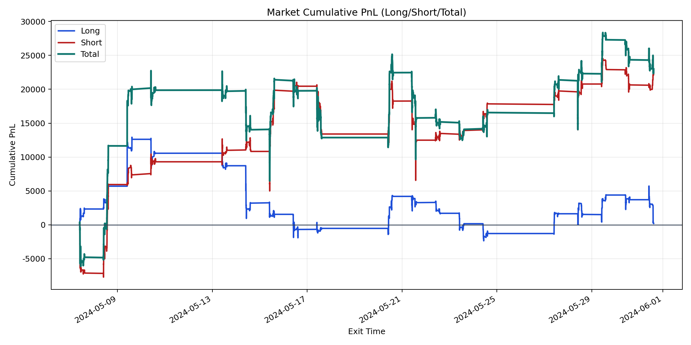
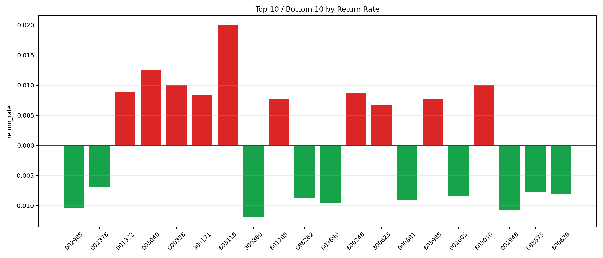

| repo_root | /home/haoranyou/data/output/alpha0.4_1w_5s_3ticks_index_filter/index_weights_1000 |
|---|---|
| period_months | 1 |
| period_label | 2024-05-07_to_2024-05-31 |
| start_time | 2024-05-07 09:50:47 |
| end_time | 2024-05-31 14:44:27 |
| n_trades | 10402 |
| n_symbols | 297 |
| total_pnl | 22986.298549999807 |
| long_total_pnl | 206.58224999989181 |
| short_total_pnl | 22779.716299999916 |
| total_entry_notional | 96512623.0 |
| long_entry_notional | 42892456.0 |
| short_entry_notional | 53620167.0 |
| total_return_rate | 0.00023816883051660305 |
| long_return_rate | 4.81628401040714e-06 |
| short_return_rate | 0.00042483486297235733 |
| top_symbols_by_return | ["603118", "003040", "600338", "603010", "001322", "600246", "300171", "603985", "601208", "300623"] |
| bottom_symbols_by_return | ["300860", "002946", "002985", "603699", "000881", "688262", "002605", "600639", "688575", "002378"] |

